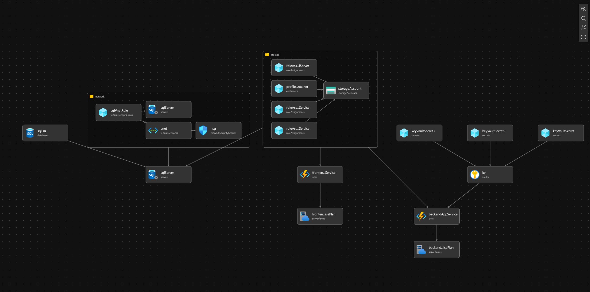

Jesper Svensson
Telefon: 0735-128847 | Email: jespersvensson1@live.com | LinkedIn
Arbetslivserfarenhet
IT-Operations Technician, Fitness24Seven, Lund
Juni 2023 – idag
- Administrerat säkerhet och behörighetshantering via Azure PIM.
- Utvecklat automatiserade flöden med Azure DevOps pipelines, Bicep, och YAML.
- Projekt: Intern användarhantering i Entra ID, digitalt inpasseringssystem, automatiserad onboarding/offboarding, NPS-dataflöde mot Power BI, och infrastrukturdeployment med Bicep.
Kompetenser
- Azure: Azure DevOps (CI/CD), Infrastruktur, Azure AD/Entra ID
- Versionshantering: både i Azure och GitHub
- CI/CD: Azure DevOps & GitHub Actions
- Infrastruktur som kod: Bicep, grundläggande Terraform
- Pipelines: YAML
- Nätverk: Cisco Meraki
Utbildning
- DevOps Engineer, JENSEN yrkeshögskola
- Ekonomiprogrammet, Cybergymnasiet, Malmö
DevOps & CI/CD Status

Container Metadata
Loading metadata...
Bicep Infrastructure Project
This project demonstrates my experience with Infrastructure as Code using Bicep on Azure. The diagram below provides an overview of the architecture.
